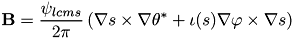
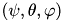
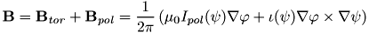
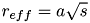
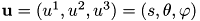
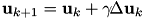

MConf Library
| [ back ] |
MConf stands for Magnetic Configuration. The goal of this library is to provide fast and convenient tools for coordinate transformations between flux coordinates and real space coordinates. Here you will find the description of CStconfig, CRayTrace, and C3dMesh classes, which comprise the package MConf. An C++ examples and example cpp2for.cpp of how to write interface C-functions (see also Mixed-language programming) in order to call C++ methods from within FORTRAN programs are available.
What it does
The input file for the MConf is the Boozer magnetic configuration file which is the result of VMEC code and JMC/xbooz_xform codes. However, MConf understands VMEC wout-file, in this case MConf uses VMEC coordinates. Magnetic configuration can be loaded also from Magnetic Configuration Database.MConf makes available numerous information about magnetic configuration of a stellarator or tokamak: magnetic field, Jacobian, iota, trapped particle fraction, minimum and maximum magnetic field on a flux surface, volume inside flux surface, and so on. The package contains programs for straight line tracing through flux surfaces. MConf can also create 3d-mesh in cylindrical coordinates on which it tabulates magnetic field, flux surface label s, grad(s) and provides functions for interpolation. The mesh and magnetic configuration can be stored in a file for future loading.
Due to object oriented approach this package easy to use in other application; for example, the visualization program MCviewer, which displays various aspects of a magnetic configuration, has been created using the library MConf. The library is written in C++, interface routines for using MConf from within FORTRAN are provided. The library can be used in Multithreaded Applications, see examples.
In short, MConf features are:
- load function, supported formats:
- W7-X by J. Geiger
- LHD [6]
- VMEC wout text file [4]
- EFIT G EQDSK
- proprietary binary format (bin4, bin8)
- save function, supported formats:
- W7-X
- proprietary binary format (bin4, bin8)
- data base operation
- load/delete/insert magnetic configuration from/to Magnetic Configuration Data Base
- functions for:
- coordinate transformation from real to flux coordinates: forth and back
- coordinate transformation from VMEC to Boozer coordinates
- inquire position (inside or outside LCMS or relative to the given contour)
- surface quantity: B, Bmin, Bmax, Jacobian, iota, V, V',Itor , Ipol, grad(reff), Fourier coefficients
- remeshing to decrease number of flux surfaces and truncate spectrum
- straight line ray tracing to find intersection of a ray with the flux surface
- 3d-mesh generator which tabulates magnetic field, flux surface label s, grad(reff) on a 3d-mesh in cylindrical coordinates and provides functions for interpolation. The mesh and its functions can be used time consuming computing (NBI modeling(including Monte-Carlo), ECE and ECRH Ray tracing)
- mesh generator can be started in several threads thus utilizing extra cores in modern processors, for example, Intel Core™ 2 Duo or Intel Core™ 2 Quad, see MConf::C3dMesh::createMesh()
- function for saving and loading 3d-mesh or magnetic configuration file in binary format for faster loading in future use
- calculating
- effective helical ripple MConf::C3dMesh::epsEffVmec()
- gradB drift velocity of trapped particles MConf::C3dMesh::Gv()
- bootstrap current geometric factor MConf::C3dMesh::FbsVmec()
What it doesn't do
MConf doesn't reconstruct or calculate equilibrium, but uses VMEC(VMEC based) or EFIT EQDSK equilibrium.MConf can't work outside the last closed magnetic surface (LCMS); LCMS is the surface with the flux suface label s = 1, where s is the normalized toroidal flux.
Flux Coordinates
Flux coordinates concept is very fundamental and convenient tools for describing complex geometry of plasma in tokamaks or stellarators [1]. These coordinates are aligned with the magnetic field structure that represents the set of nested magnetic (or flux) surfaces of a toroidal type. The surfaces are enumerated by the flux surface label or effective plasma radius; usually that is a quantity derived from the poloidal or toroidal magnetic flux value enclosed by the flux surface. To define position on a flux surfaces the two angle-like variables are used. The flux coordinates in which these angles are chosen in such a way that the magnetic field lines are straight lines on the plane are called magnetic coordinates.
are used. The flux coordinates in which these angles are chosen in such a way that the magnetic field lines are straight lines on the plane are called magnetic coordinates.Vmec Coordinates
 that helps to build straight field line coordinates system
that helps to build straight field line coordinates system

with 
The flux coordinates are defined by giving the cylindrical coordinates as functions of the flux coordinates
The Jacobian and magnetic field are calculated using formulas
B-field line going through the point is defined by expression
![\[ \theta(\varphi)=\theta_{0}+\iota(s_{0})(\varphi-\varphi_{0}) - [\lambda(s_{0},\theta,\varphi)-\lambda(s_{0},\theta_{0},\varphi_{0})] \]](form_33.png)
Both methods can be applied to follow field line:
- MConf::C3dMesh::magCoordFieldLine() uses cylindrical angle,
- MConf::C3dMesh::mixCoordFieldLine() uses cylindrical angle.
- Note:
Reading the wout-file created by VMEC in use by J. Geiger.
! full-mesh quantities
read(iunit,*)(iotaf(j),presf(j),phipf(j),phi(j),jcuru(j),jcurv(j),j=1,ns)
! half-mesh quantities
read(iunit,*)(iotas(j),mass(j),pres(j),beta_vol(j),phip(j),buco(j),bvco(j), &
vp(j),overr(j),specw(j),j=2,ns)
Reading the file created by VMEC in use by PPPL.
! half-mesh quantities (except phi, jcuru, jcurv which are on full-mesh)
read(iwout,*)(iotas(j),mass(j),pres(j),beta_vol(j),phip(j),buco(j),bvco(j), phi(j), &
vp(j),overr(j),jcuru(j),jcurv(j),specw(j),j=2,ns)
PEST coordinates
The straight-field-line coordinates system that uses the cylindrical angle as the toroidal angle in tokamak literature is called PEST [7] coordinates.
In case of VMEC input file these coordinates, , can be easily build from Vmec Coordinates and its stream function using transformation
The following methods perform transformation between the PEST and VMEC coordinates:
MConf::CStconfig::Vmec2Pest()
MConf::CStconfig::Pest2Vmec()
The method returns contravariant-basis vectors in cylindrical coordinates:
MConf::CStconfig::SFLcontraBasis()
Boozer Coordinates
In Boozer coordinates, the contravariant and covariant components of the magnetic field are defined through the expressions [1,2]:
where  are the toroidal flux, poloidal, and toroidal angles; ( at the magnetic axis), , .
The magnetic coordinate system is defined by giving the cylindrical coordinates as functions of magnetic coordinates, i.e. the cylindrical coordinates of a point on a magnetic surface and the magnetic field value are:

where is the number of field periods.
Poloidal and toroidal currents and Fourier coefficients are stored in a Boozer file. This information is enough to calculate the Jacobian and magnetic field using formulas
where X is the spatial position given by
MConf library uses normalized toroidal flux as a flux surface label, which is zero on a magnetic axes and one at the LCMS. The flux surface label s is the same as in original VMEC file. Then expressions for the Jacobian and magnetic field are as follows
Boozer coordinate system represent the magnetic coordinates, so the B-field line going through the point is defined by linear expression
There are two library methods that can be applied to follow field line:
- MConf::C3dMesh::magCoordFieldLine() uses Boozer toroidal angle,
- MConf::C3dMesh::mixCoordFieldLine() uses cylindrical angle.
Tokamak Symmetry Flux Coordinates
MConf can import equilibrium from G EQDSK File into straight-field-line coordinates system with the symmetry angle as the toroidal angle . This coordinate system is called Tokamak Symmetry Flux Coordinates in [1]. Other name of this system is the PEST coordinates [7].
![\[ \mathbf{B}=\frac{1}{2\pi}\left(\nabla\psi\times\nabla\theta+\iota(\psi)\nabla\varphi\times\nabla\psi\right) \]](form_55.png)
or in the form used in the tokamak literature

In MConf, the magnetic coordinates are defined as a Fourier decomposition by giving the cylindrical coordinates as functions of magnetic coordinates
With this representation (summation over n from 0 to 1) the tokamak equilibrium from G EQDSK File can be saved in W7-X format, where  term provides sin and cos terms in expansions. The coefficients are calculated by B-field line tracing while creating straight-field-line coordinates system.
term provides sin and cos terms in expansions. The coefficients are calculated by B-field line tracing while creating straight-field-line coordinates system.
Fourier decomposition of the tokamak equilibrium allows us to use all MConf-library functions without need to be rewritten; the Jacobian is only different. The import is provided by class MConf::CEfit.
The Jacobian and magnetic field are calculated using formulas
Poloidal current is provided by G EQDSK File.
B-field line going through the point is defined by expression
Both methods can be applied to follow field line:
- MConf::C3dMesh::magCoordFieldLine() uses cylindrical angle,
- MConf::C3dMesh::mixCoordFieldLine() uses cylindrical angle.
- Note:
CC Tokamak Symmetry Flux Coordinates
is written into files exported by MConf::CStconfig::write, MConf::CStconfig::writeasciiReduced
Coordinate Transformation
Transformation from VMEC to Boozer Coordinates
Substituting the Boozer angles expressed through the VMEC angles

into the covariant representation of the magnetic field in Boozer Coordinates we obtain the equation for determining the double-periodic transformation function
The above expression yields the following covariant components of the magnetic field in VMEC coordinates:
from which the Fourier coefficients of the angle transformation function are expressed through the known VMEC quantities:
The Boozer spectra of quantities of interest are calculated by integrating over the Boozer angles
![\begin{eqnarray*} B_{mn}^{B} & = & \frac{1}{2\pi^2}\int^{2\pi}_0 \int^{2\pi}_0 d\theta_B d\varphi_B\, cos(m\theta_B - nN_p\varphi_B)\,B(\theta_B,\varphi_B)\\ R_{mn}^{B} & = & \frac{1}{2\pi^2}\int^{2\pi}_0 \int^{2\pi}_0 d\theta_B d\varphi_B\, cos(m\theta_B - nN_p\varphi_B)\,r(\theta_B,\varphi_B)\\ Z_{mn}^{B} & = & \frac{1}{2\pi^2}\int^{2\pi}_0 \int^{2\pi}_0 d\theta_B d\varphi_B\,sin(m\theta_B - nN_p\varphi_B)\,z(\theta_B,\varphi_B)\\ \frac{2\pi}{nN_p}\Phi_{mn}^{B} & = & \frac{1}{2\pi^2}\int^{2\pi}_0 \int^{2\pi}_0 d\theta_B d\varphi_B\,sin(m\theta_B - nN_p\varphi_B)\,h(\theta_B,\varphi_B)\\ \end{eqnarray*}](form_71.png)
or VMEC angles
![\begin{eqnarray*} B_{mn}^{B} & = & \frac{1}{2\pi^2}\int^{2\pi}_0 \int^{2\pi}_0 d\theta_V d\varphi_V\, \frac{\partial(\theta_B,\varphi_B)}{\partial(\theta_V,\varphi_V)}\, cos(m\theta_B - nN_p\varphi_B)\,B(\theta_V,\varphi_V)\\ R_{mn}^{B} & = & \frac{1}{2\pi^2}\int^{2\pi}_0 \int^{2\pi}_0 d\theta_V d\varphi_V\, \frac{\partial(\theta_B,\varphi_B)}{\partial(\theta_V,\varphi_V)}\, cos(m\theta_B - nN_p\varphi_B)\,r(\theta_V,\varphi_V)\\ Z_{mn}^{B} & = & \frac{1}{2\pi^2}\int^{2\pi}_0 \int^{2\pi}_0 d\theta_V d\varphi_V\,\frac{\partial(\theta_B,\varphi_B)}{\partial(\theta_V,\varphi_V)}\, sin(m\theta_B - nN_p\varphi_B)\,z(\theta_V,\varphi_V)\\ \frac{2\pi}{nN_p}\Phi_{mn}^{B} & = & \frac{1}{2\pi^2}\int^{2\pi}_0 \int^{2\pi}_0 d\theta_V d\varphi_V\,\frac{\partial(\theta_B,\varphi_B)}{\partial(\theta_V,\varphi_V)}\, sin(m\theta_B - nN_p\varphi_B)\,h(\theta_V,\varphi_V)\\ \end{eqnarray*}](form_72.png)
where and
The following methods perform transformation between the Boozer and VMEC coordinates:
MConf::CStconfig::Vmec2Boozer()
MConf::CStconfig::Boozer2Vmec()
MConf::CStconfig::writeVmec2Boozer()
The example of how to transform the VMEC wout-file to Boozer-coordinate data file in W7X format is as follows
#include "CStconfig.h" int main() { MConf::CStconfig mConf; if(!mConf.load("wout.w7x-sc1.txt")) exit(1); mConf.writeVmec2Boozer("w7x-sc1.bc"); }
see also Getting started and Minimal example
Transformation from cylindrical to flux Coordinates
The formulas in section Flux Coordinates give prescription of how to find spatial position and magnetic field for point given in flux coordinates. However in most cases one need to know the flux surface label and the magnetic field at point given in cylindrical coordinates. Let us consider some examle. In pencil-beam approach the attenuation of the neutral beam injected into plasma can be described by the following equations
where is the beam current, is the length along beam, is the plasma density, is the effective cross section, is the spatial position, is the unit vector of beam direction. The second equation gives the beam trajectory in real space, though the plasma density or plasma profile is given as a function of flux surface label or effective radius  ( a is the minor plasma radius). The coordinates transformation from real space coordinates to the flux coordinates is needed in order to find plasma parameters along beam trajectory. This problem is common for plasma diagnostics, for pellet injection modeling, ECRH ray/beam tracing, NBI heating modeling.
Newton method
To do the transformation from cylindrical coordinates to the flux coordinates system  the following system has to be solved
Using initial guess  , the correction
, the correction  is calculated from the system obtained by Taylor expansion
is calculated from the system obtained by Taylor expansion
The solution is then found using iterations

where
is the scale factor used to avoid negative flux label s.
This method is fast and accurate. Basis vectors and thus other quantities are available right after transformation. With a "good" guess only two or three iterations are needed to achieve accuracy of 0.1mm for W7-X magnetic configurations. The information from spatial points used in a previous coordinate transformations provides the good guess, for example during generating 3d-mesh or ray tracing. In cases when there is no information from nearest points available the library MConf uses rather slow root finder to compute the guess. The finder employs 2d-iterations on R-Z-plane.
The figure below illustrates efficiency of the Newton method even in cases of "bad" guess. The iterations going from the guesses to solutions are shown.
Getting started
This documentation is build with Doxygen which generates a lot of information that is useful for developer, but makes usual user confused. Naturally the question arises how to start to use MConf and which classes are really needed.In most cases you need only MConf::CStconfig or MConf::C3dMesh
- MConf::CStconfig is the main class which implements geometric calculation. In particular, this class provides forth and back coordinate transformation between flux and real space coordinates.
- MConf::C3dMesh is the class derived from CStconfig and all methods from CStconfig are available. In addition, C3dMesh tabulates magnetic field, flux surface label, grad(s) on a 3d-mesh in cylindrical coordinates and provides functions for interpolation. Use this class if you need fast coordinate mapping from real space to flux surface label. You can even do magnetic field line tracing.
You may also find the class MConf::CProfile to be usefull.
See also some examples.
Minimal example
This is a minimal example of how to use the CStconfig class.The steps are:
#include "CStconfig.h" //1. include the header file #include <iostream> int main(int argc, char* argv[]) { using namespace MConf; //2. MConf functions are in MConf namespace const double degree = 3.1415926535898/180; CStconfig mc; //3. Declare object if(false==mc.load("w7x-sc1.bc")) { //4. load into it magnetic configuration std::cout << "Loading error"<<std::endl; return 1; // exit if errors } //set point in cylindrical coord. Vector3d cyl(6,1*degree,0.5); //5. set point in real space // s is the normalized toroidal flux double s = mc.cyl2s(cyl); //6. find flux label that corresponds to cyl std::cout<<"cyl="<<cyl<<" s="<<s<<std::endl; //7. print results return 0; }
Functions of MConf-library are defined in namespace MConf, that is why using namespace MConf appears in step 2. However I would recommend not to use using namespace in your program. Otherwise you'll have problems in the future when someone (or even you) adds a symbol in other namespace and it will collide with one in yours. Using an individual class or function name (like using Mconf::Vector3d;) is okay, but don't do it at the file scope or a header file.
See also other examples.
Objects can be copied
MConf::CStconfig, MConf::CRayTrace, and MConf::C3dMesh objects internally use data sharing, so they can be cloned/copied without CPU time and memory overhead since only the pointers are copied (they are really smart). Writing to the clone object may take some time because the data referenced by the corresponding pointer is automatically cloned to preserve original instance of the object. The method is called "copy-on-write." With copy-on-write, two or more objects can share the same data until the moment when one of those objects is changed, at which point the data is physically copied and changed in one of the objects. This allows effective using of the MCONF in the multithreading programming.see also MConf::pBase::ngArray description.
#include "C3dMesh.h" int main(int argc, char* argv[]) { MConf::C3dMesh mc1, mc2, mc3; // C3dMesh is defined in MConf namespace // the class is prefixed by namespace m1.load("filenameOfMesh.bin4"); if(mc1.isMeshOK()==false) { // create mesh if needed mc1.createMeshUsingSymmetry (0.02,0.02,2*degree); if(false==mc1.isMeshOK()) exit(1); // exit if errors } mc2 = mc1; // This assignment is completely legal mc3 = mc2; MConf::Vector3d c1(5),c2(5.1),c3(5.4); double s1 = mc1.cyl2s(c1); // can be run in new execution thread, not shown here double s2 = mc2.cyl2s(c2); // can be run in new execution thread double s3 = mc3.cyl2s(c3); // can be run in new execution thread return 0; }
The advantage of the code above is that the mesh is generated only once and then it can be used in different execution threads on a multi-processor systems with shared memory.
This technique is used in MConf::C3dMesh::createMeshUsingSymmetry(), MConf::CStconfig::epsEffCreate(), MConf::CStconfig::FbsCreate(), in flux-surface averaging procedures and in NBI-code to run several NBI beams through plasma concurrently, see Related Projects and threads.h
Related Projects
- Magnetic Configuration viewer displays a magnetic configuration and is written on a base of the MConf library. The MCviewer (sreenshoots) is written in C++, using OpenGL library and the FLTK project (a cross-platform GUI library http://www.fltk.org/ ). The FLTK library are distributed by its authors under the terms of the GNU Library General Public License (LGPL) with the exceptions, which do not require the author to provide source code of MCviewer.
- Travis (stands for TRAce and VISualize) is the multi-beam multi-pass ray-tracing code for electron cyclotron heating and current drive calculations; it uses MConf library.
- NBIviewer is the code for Neutral Beam Injection heating simulation with the graphical user interface (GUI) front-end to the NBI-code; it uses MConf library.
Acknowledgments
The author thanks H. Maaßberg, J. Geiger, C.D. Beidler, A. Dinklage, H. Dreier, Y. Feng, N. Marushchenko, M. Schmidt, J. Svensson, A. Werner for suggestions, contributions, helpful comments, and bug reports.
| Special thanks go to Dimitri van Heesch for his program that has been used for producing this documentation. |
 |
| 13 Oct 2021 |

|
Max-Planck-Institut für Plasmaphysik |